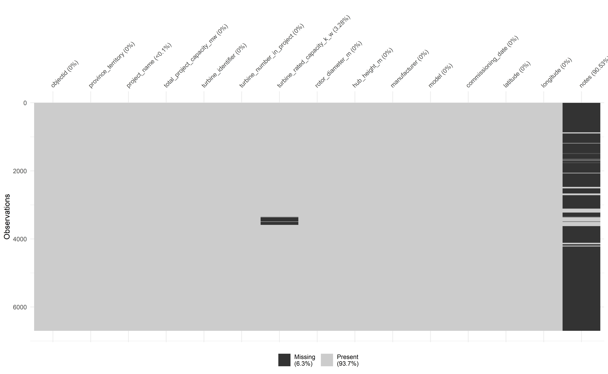
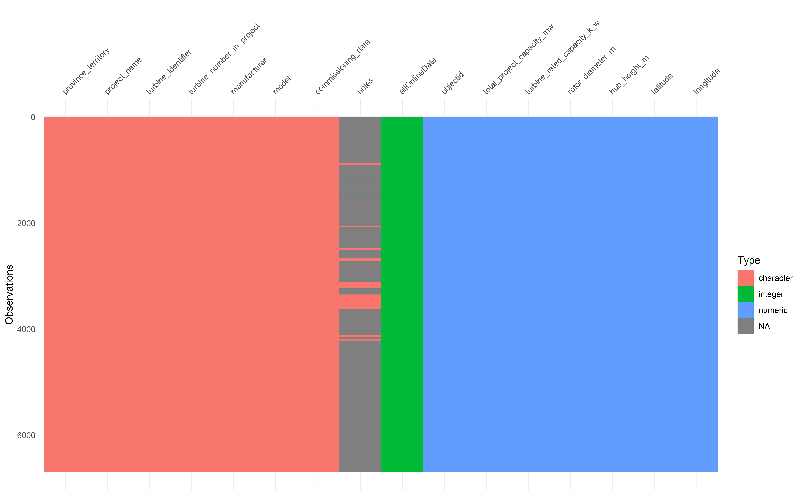
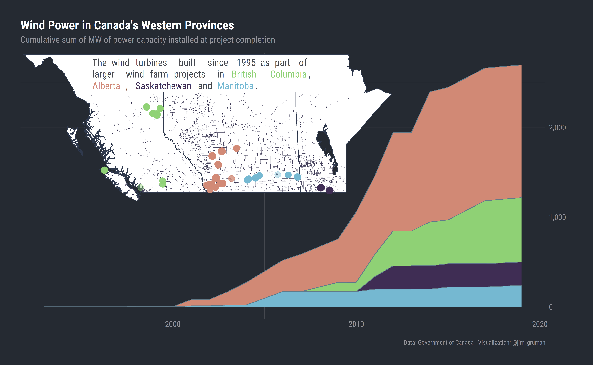

Last updated: 2020-10-29
Checks: 7 0
Knit directory: myTidyTuesday/
This reproducible R Markdown analysis was created with workflowr (version 1.6.2). The Checks tab describes the reproducibility checks that were applied when the results were created. The Past versions tab lists the development history.
Great! Since the R Markdown file has been committed to the Git repository, you know the exact version of the code that produced these results.
Great job! The global environment was empty. Objects defined in the global environment can affect the analysis in your R Markdown file in unknown ways. For reproduciblity it’s best to always run the code in an empty environment.
The command set.seed(20200907) was run prior to running the code in the R Markdown file. Setting a seed ensures that any results that rely on randomness, e.g. subsampling or permutations, are reproducible.
Great job! Recording the operating system, R version, and package versions is critical for reproducibility.
Nice! There were no cached chunks for this analysis, so you can be confident that you successfully produced the results during this run.
Great job! Using relative paths to the files within your workflowr project makes it easier to run your code on other machines.
Great! You are using Git for version control. Tracking code development and connecting the code version to the results is critical for reproducibility.
The results in this page were generated with repository version 34b0a90. See the Past versions tab to see a history of the changes made to the R Markdown and HTML files.
Note that you need to be careful to ensure that all relevant files for the analysis have been committed to Git prior to generating the results (you can use wflow_publish or wflow_git_commit). workflowr only checks the R Markdown file, but you know if there are other scripts or data files that it depends on. Below is the status of the Git repository when the results were generated:
Ignored files:
Ignored: .Rhistory
Ignored: .Rproj.user/
Untracked files:
Untracked: figure/2020_10_27_tidy_tuesday.Rmd/
Note that any generated files, e.g. HTML, png, CSS, etc., are not included in this status report because it is ok for generated content to have uncommitted changes.
These are the previous versions of the repository in which changes were made to the R Markdown (analysis/CanadaWindTurbines.Rmd) and HTML (docs/CanadaWindTurbines.html) files. If you’ve configured a remote Git repository (see ?wflow_git_remote), click on the hyperlinks in the table below to view the files as they were in that past version.
| File | Version | Author | Date | Message |
|---|---|---|---|---|
| Rmd | 34b0a90 | opus1993 | 2020-10-29 | wflow_publish(“analysis/CanadaWindTurbines.Rmd”) |
| html | dae0032 | opus1993 | 2020-10-29 | Build site. |
| Rmd | 78901d9 | opus1993 | 2020-10-29 | wflow_publish(“analysis/CanadaWindTurbines.Rmd”) |
The data this week comes from the Government of Canada.
Download the weekly data and make available in the tt object.
tt <- tt_load("2020-10-27")
Downloading file 1 of 1: `wind-turbine.csv`Let’s take an initial look at the format of the data available. There is a single table this week. Some records appear to be missing.
tt$`wind-turbine`# A tibble: 6,698 x 15
objectid province_territ~ project_name total_project_c~ turbine_identif~
<dbl> <chr> <chr> <dbl> <chr>
1 1 Alberta Optimist Wi~ 0.9 OWE1
2 2 Alberta Castle Rive~ 44 CRW1
3 3 Alberta Waterton Wi~ 3.78 WWT1
4 4 Alberta Waterton Wi~ 3.78 WWT2
5 5 Alberta Waterton Wi~ 3.78 WWT3
6 6 Alberta Waterton Wi~ 3.78 WWT4
7 7 Alberta Cowley North 19.5 CON1
8 8 Alberta Cowley North 19.5 CON2
9 9 Alberta Cowley North 19.5 CON3
10 10 Alberta Cowley North 19.5 CON4
# ... with 6,688 more rows, and 10 more variables:
# turbine_number_in_project <chr>, turbine_rated_capacity_k_w <dbl>,
# rotor_diameter_m <dbl>, hub_height_m <dbl>, manufacturer <chr>,
# model <chr>, commissioning_date <chr>, latitude <dbl>, longitude <dbl>,
# notes <chr>tt$`wind-turbine` %>%
vis_miss()
The turbine identifier and year of objectid 1451 is consistent with the other St. Lawrence project_name turbines. We will impute the missing value to the dataset as St. Lawrence.
Where turbine rated capacity is missing, the total rated capacity will be assumed to be spread uniformly across all turbines in a project if the model of the turbine is the same. This is the case for Armow Wind Project, South Kent Wind Farm, and Skyway8.
Commissioning_dates are spread in some cases across two or three or even as many as seven years. for the purposes of this analysis, I am going to parse out the right-most, last, date as the allOnlineDate as an integer.
windTurbine <- tt$`wind-turbine` %>%
mutate(project_name = if_else(objectid == 1451,
"St. Lawrence",
project_name
)) %>%
group_by(project_name) %>%
mutate(
turbine_rated_capacity_k_w =
if_else(is.na(turbine_rated_capacity_k_w),
total_project_capacity_mw * 1000 / n(),
turbine_rated_capacity_k_w
)
) %>%
ungroup() %>%
mutate(allOnlineDate = as.integer(str_sub(
commissioning_date,
str_length(commissioning_date) - 3,
str_length(commissioning_date)
))) %>%
mutate(manufacturer = if_else(str_detect(manufacturer, "Acciona"),
"Acciona",
manufacturer
))
vis_dat(windTurbine)
The notes contain valuable insights. Some specifications may have changed since installation. In other cases, the dataset presented here has other technical assumptions.
windTurbine %>%
filter(!is.na(notes)) %>%
distinct(project_name, notes, province_territory) %>%
knitr::kable(caption = "Canada Wind Farm Data Notes") %>%
kable_minimal(c("striped", "hover", "responsive"))| province_territory | project_name | notes |
|---|---|---|
| Alberta | Kettles Hill | This farm consists of three different hub heights; with three 50 m turbines, five 60 m turbines, and twenty-seven 67 m turbines. No information available on which turbines fall into which category |
| British Columbia | Pennask | Derated from 3200 kW |
| British Columbia | Shinish | Derated from 3200 kW |
| British Columbia | Moose Lake | Derated from 4200 kW |
| Nova Scotia | Little Brook | Hub height approximated from manufacturer specifications |
| Nova Scotia | Brookfield | Hub height approximated from manufacturer specifications |
| Nova Scotia | Goodwood | Turbine height approximated from manufacturer specifications |
| Nova Scotia | Digby Limited | Turbine height approximated from manufacturer specifications |
| Nova Scotia | Marshville Limited | Hub height approximated from manufacturer specifications |
| Nova Scotia | Tiverton Riverhurst | Turbine height assumed from turbine model |
| Nova Scotia | Spiddle Hill | Turbine height assumed |
| Nova Scotia | Creignishrear | Turbine height assumed based off turbine model |
| Nova Scotia | Irish Mountain | Turbine height estimated |
| Nova Scotia | Millbrook | Assumed turbine height based on similar projects/turbines |
| Nova Scotia | Truro Heights | Turbine height assumed from turbine model |
| Nova Scotia | Cheticamp | Turbine height assumed from turbine model |
| Nova Scotia | Fitzpatrick | Turbine derated from 1600 kW. Turbine height approximated from manufacturer specfications |
| Nova Scotia | Kemptown | Turbine uprated from 1600 kW |
| Nova Scotia | Limerock | Turbine uprated from 1600 kW |
| Nova Scotia | North Beaver Bank Community Wind | Turbine derated from 2000 kW |
| Nova Scotia | Point Aconi | Assumed turbine model based on rated output. Assumed turbine height based on turbine model |
| Nova Scotia | Baddeck | Turbine derated from 2000 kW |
| Nova Scotia | Pictou Landing | Assumed turbine height based on turbine model and similar projects |
| Ontario | Clear Creek | Turbine height approximated |
| Ontario | Cultus | Turbine height approximated |
| Ontario | Frogmore | Turbine height approximated |
| Ontario | Chatham | 4 of the turbines have 93 ft rotor diameter. Not known which turbines have the smaller rotor |
| Ontario | Raleigh Wind Energy Centre | Assumed XLE model. Rotor diameter approximated. |
| Ontario | Dufferin Wind | Turbines are derated to levels of 2750/2565/2470/1600/1482/1388/1336 to a farm total of 91.4 MW |
| Ontario | Grand Renewable Wind | Wind farm consists of 65 turbines with a nameplate capacity of 2221 kW and 2 turbines with a capacity of 2126 kW. Unknown which turbines have capacity of 2126 kW. |
| Ontario | Skyway 8 | All turbines are identical, but 2 operate at 1815 kW and 3 at 1950 kW. No information on which turbines operate at what output. |
| Ontario | South Kent Wind Farm | Some turbines derated such that the farm has a maximum operating capacity of 270 MW |
| Ontario | Armow Wind Project | Some turbines derated such that the farm has an maximum operating capacity of 180 MW |
| Ontario | Bow Lake Wind Project | Turbines uprated from 1600 kW |
| Ontario | Port Ryerse | Turbines derated from 3000 kW |
| Ontario | Belle River | Some turbines derated such that wind farm has maximum capacity of 100 MW |
| Ontario | North Kent Wind Farm | Turbine derated from 3200 kW |
A count of turbines by manufacturer.
windTurbine %>%
group_by(manufacturer) %>%
summarize(
Turbines = n(),
`Total Installed Capacity in kW` = sum(turbine_rated_capacity_k_w)
) %>%
arrange(desc(Turbines)) %>%
knitr::kable(caption = "Canada Wind Power Turbine Manufacturers") %>%
kable_minimal(c("striped", "hover", "responsive"))| manufacturer | Turbines | Total Installed Capacity in kW |
|---|---|---|
| Vestas | 1834 | 3542350 |
| GE | 1725 | 2819540 |
| Siemens | 1248 | 2902736 |
| Enercon | 960 | 2193980 |
| Senvion | 643 | 1354450 |
| NEG Micon | 132 | 99000 |
| Acciona | 74 | 177000 |
| Nordex | 20 | 26000 |
| Suzlon | 15 | 31500 |
| Vensys | 9 | 12300 |
| Gamesa | 8 | 16000 |
| Windmatic | 6 | 390 |
| DeWind | 5 | 10000 |
| Samsung Renewable Energy | 4 | 10000 |
| Northwind | 3 | 300 |
| Turbowinds | 3 | 1800 |
| Bonus | 2 | 300 |
| EWT | 2 | 1800 |
| Lagerwey | 2 | 1500 |
| Leitwind | 1 | 1500 |
| Pfleiderer | 1 | 650 |
| Tacke | 1 | 600 |
Lets build an area chart showing the growth in capacity with an inset map:
western_turbines <- filter(windTurbine, province_territory %in% c("Alberta", "British Columbia", "Manitoba", "Saskatchewan"))
p1 <- western_turbines %>%
select(province_territory, allOnlineDate, turbine_rated_capacity_k_w) %>%
complete(allOnlineDate, province_territory, fill = list(turbine_rated_capacity_k_w = 0)) %>%
group_by(province_territory, allOnlineDate) %>%
summarize(sumCapacity = sum(turbine_rated_capacity_k_w)) %>%
mutate(CumSumCapacity = cumsum(sumCapacity)) %>%
ggplot() +
geom_area(aes(allOnlineDate, CumSumCapacity / 1000, fill = province_territory), show.legend = FALSE) +
scale_y_continuous(labels = scales::comma_format(), position = "right") +
scale_fill_ipsum() +
labs(
y = "", x = "", fill = "",
title = "Wind Power in Canada's Western Provinces",
subtitle = "Cumulative sum of MW of power capacity installed at project completion",
caption = "Data: Government of Canada | Visualization: @jim_gruman"
)Where are these turbines?
Can we take a look at turbines in the western provinces?
adapted from Jake Kaupp’s TidyTuesday submission this week on the Maritime provinces
western_provinces <- ne_states("Canada", returnclass = "sf") %>%
filter(name %in% c("Alberta", "British Columbia", "Manitoba", "Saskatchewan"))
wp_box <- st_bbox(western_provinces)
western_bbox <- matrix(c(wp_box[1], wp_box[3], wp_box[2], max(western_turbines$latitude) + 1), nrow = 2, ncol = 2)
western_hwy <- western_bbox %>%
opq(timeout = 6000) %>%
add_osm_feature(
key = "highway",
value = c("primary", "secondary", "tertiary", "secondary_link", "tertiary_link")
) %>%
osmdata_sf()
western_hwy_clipped <- st_intersection(western_hwy$osm_lines, western_provinces)
p2 <- ggplot() +
geom_sf(data = western_provinces, inherit.aes = FALSE, color = "#2F394D", fill = "white") +
geom_sf(data = western_hwy_clipped, inherit.aes = FALSE, color = "#403d58", size = 0.1) +
geom_point(data = western_turbines, aes(x = longitude, y = latitude, color = province_territory), alpha = 0.4, size = 4, show.legend = FALSE) +
scale_color_ipsum() +
geom_richtext(aes(
x = -130, y = 58.5,
label = "The wind turbines built since 1995 as part of<br>larger wind farm projects in <span style='color:#8fd175'>British Columbia</span>,<br> <span style='color:#d18975'>Alberta</span>, <span style='color:#75b8d1'>Saskatchewan</span> and <span style='color:#3f2d54'>Manitoba</span>."
), fill = "white", hjust = 0, label.color = NA, size = 5, color = "#464950", family = "Roboto Condensed") +
labs(x = "", y = "") +
scale_size_area(max_size = 6) +
theme_map()ggdraw(p1) +
draw_plot(p2, 0, .3, .7, .7)
sessionInfo()R version 4.0.3 (2020-10-10)
Platform: x86_64-w64-mingw32/x64 (64-bit)
Running under: Windows 10 x64 (build 19041)
Matrix products: default
locale:
[1] LC_COLLATE=English_United States.1252
[2] LC_CTYPE=English_United States.1252
[3] LC_MONETARY=English_United States.1252
[4] LC_NUMERIC=C
[5] LC_TIME=English_United States.1252
attached base packages:
[1] stats graphics grDevices utils datasets methods base
other attached packages:
[1] cowplot_1.1.0 ggtext_0.1.0.9000 rnaturalearth_0.1.0
[4] sf_0.9-6 osmdata_0.1.3 kableExtra_1.3.1
[7] visdat_0.5.3 naniar_0.6.0 tidytuesdayR_1.0.1
[10] hrbrthemes_0.8.6 forcats_0.5.0 stringr_1.4.0
[13] dplyr_1.0.2 purrr_0.3.4 readr_1.4.0
[16] tidyr_1.1.2 tibble_3.0.4 ggplot2_3.3.2
[19] tidyverse_1.3.0 workflowr_1.6.2
loaded via a namespace (and not attached):
[1] fs_1.5.0 usethis_1.6.3 lubridate_1.7.9
[4] webshot_0.5.2 httr_1.4.2 rprojroot_1.3-2
[7] R.cache_0.14.0 tools_4.0.3 backports_1.1.10
[10] utf8_1.1.4 R6_2.4.1 KernSmooth_2.23-17
[13] rgeos_0.5-5 DBI_1.1.0 colorspace_1.4-1
[16] withr_2.3.0 sp_1.4-4 tidyselect_1.1.0
[19] curl_4.3 compiler_4.0.3 git2r_0.27.1
[22] extrafontdb_1.0 cli_2.1.0 rvest_0.3.6
[25] xml2_1.3.2 labeling_0.4.2 scales_1.1.1
[28] classInt_0.4-3 systemfonts_0.3.2 digest_0.6.26
[31] R.utils_2.10.1 rmarkdown_2.5 pkgconfig_2.0.3
[34] htmltools_0.5.0 extrafont_0.17 styler_1.3.2
[37] highr_0.8 dbplyr_1.4.4 rlang_0.4.8
[40] readxl_1.3.1 rstudioapi_0.11 farver_2.0.3
[43] generics_0.0.2 jsonlite_1.7.1 R.oo_1.24.0
[46] magrittr_1.5.0.9000 Rcpp_1.0.5 munsell_0.5.0
[49] fansi_0.4.1 gdtools_0.2.2 R.methodsS3_1.8.1
[52] lifecycle_0.2.0 stringi_1.5.3 whisker_0.4
[55] yaml_2.2.1 grid_4.0.3 blob_1.2.1
[58] promises_1.1.1 crayon_1.3.4 lattice_0.20-41
[61] haven_2.3.1 gridtext_0.1.1 hms_0.5.3
[64] knitr_1.30 ps_1.4.0 pillar_1.4.6
[67] markdown_1.1 reprex_0.3.0 glue_1.4.2
[70] evaluate_0.14 modelr_0.1.8 selectr_0.4-2
[73] vctrs_0.3.4 httpuv_1.5.4 Rttf2pt1_1.3.8
[76] cellranger_1.1.0 gtable_0.3.0 assertthat_0.2.1
[79] xfun_0.18 broom_0.7.2 e1071_1.7-4
[82] rnaturalearthhires_0.2.0 later_1.1.0.1 class_7.3-17
[85] viridisLite_0.3.0 units_0.6-7 ellipsis_0.3.1